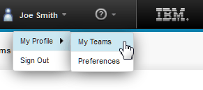

Setting the teams for your account
As a user, you can see and edit the teams that you are assigned to on the server. Your permissions determine which changes you can make.
-
At the upper-right corner of the server window, click your user name, and then click My Profile > My Teams, as shown in the following figure:

-
From the My Teams page, manage the teams that you are a member of. For more information, see Security teams.
- Set the default teams for objects that you create:
- Click My Profile > My Teams, and then go to the Preferences tab.
- In the Default Teams for New Objects list, specify which teams to assign new objects to: Select All Available Teams to add new objects to all of the teams that you are a member of. Select None to specify that no new objects are added to your teams. To specify specific teams, select Specific Teams, and then select one or more teams.
Parent topic: Setting user preferences
Parent topic: Managing security